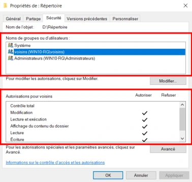
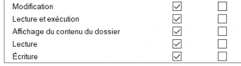
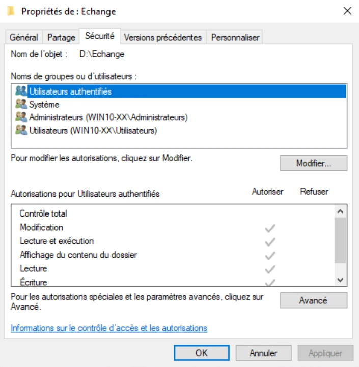
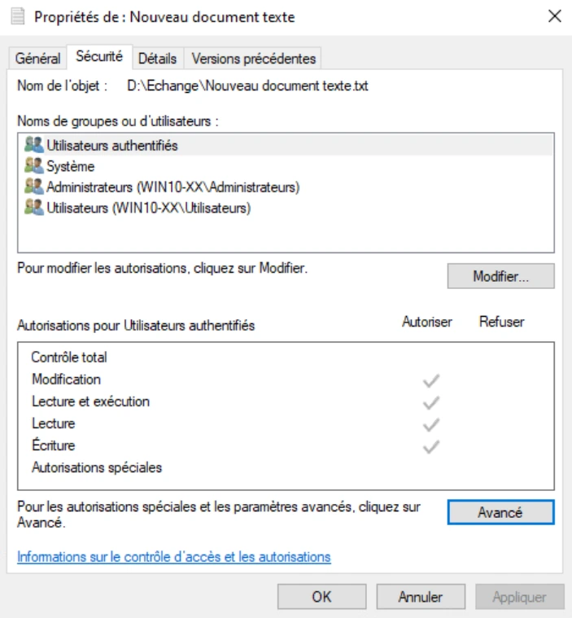
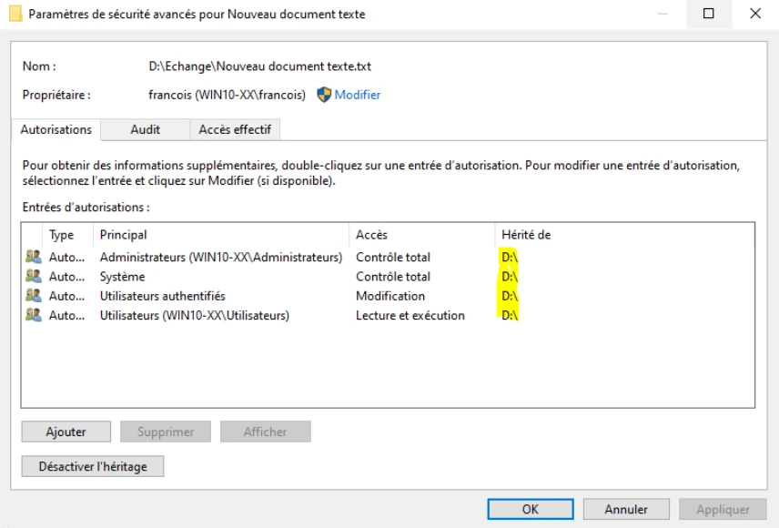
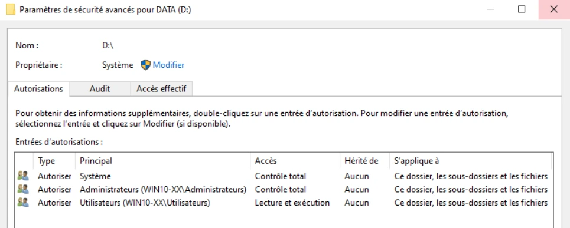
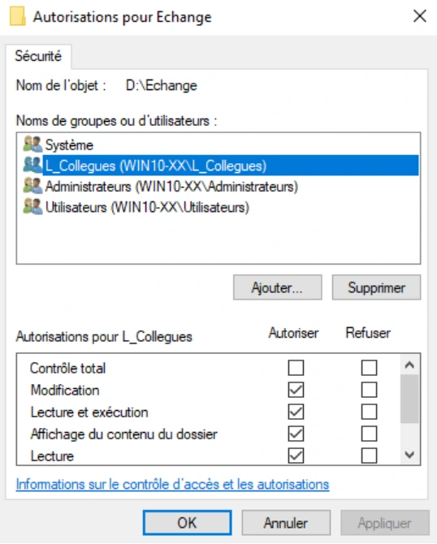
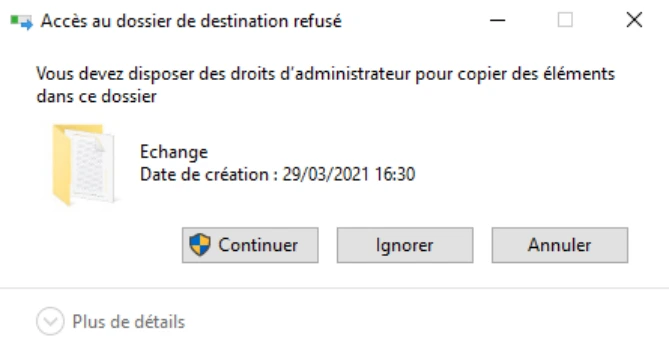
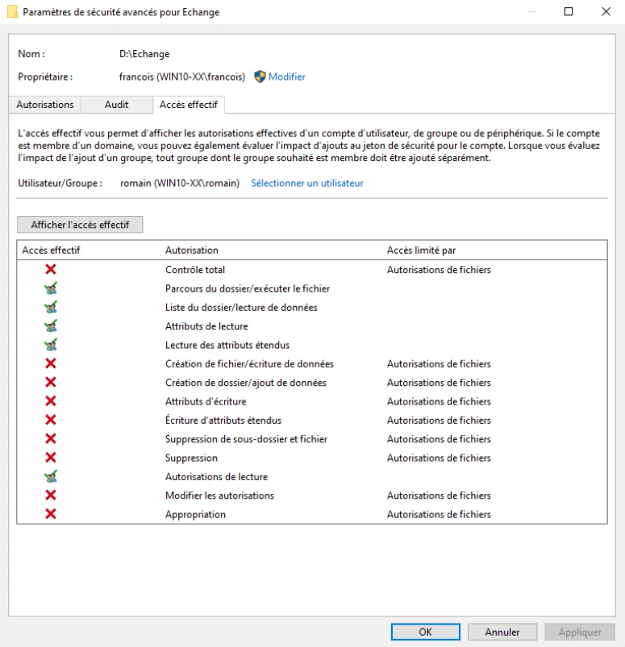
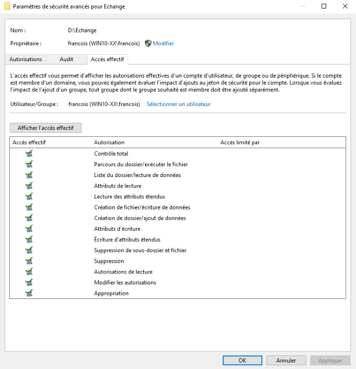

Module 06 — La sécurité NTFS et les ACL¶
La transcription du support Drive et l’aide pédagogique sont séparées pour rendre leur provenance explicite.
SOURCE DRIVE · TRANSCRIPTION DU SUPPORT
Le contenu des documents du dossier TSSR est transcrit ci-dessous, page par page. Les textes et tableaux sont intégrés à la page Web. Aucun fichier PDF, aucune diapositive entière ni aucune reproduction de page n’est affiché. Seuls des croquis ou visuels isolés et vérifiés peuvent accompagner la transcription. Les versions et les consignes restent celles des supports de formation. Les compléments IA sont conservés dans leur onglet distinct.
Support · Module 06 - Support de cours · 7 pages transcrites
Systèmes clients Microsoft
Module 06 – La sécurité NTFS et les ACL
Objectifs
- Définir et découvrir les ACL
- Connaître le fonctionnement et les bonnes pratiques
- Configurer les accès
- Vérifier leur bon fonctionnement
NTFS et les ACL
Sur un volume formaté en NTFS
- Tous les répertoires et tous les fichiers sont soumis à la sécurité NTFS
- Des autorisations définissent des privilèges d'accès
- L'utilisateur présente son jeton d'accès, qui est filtré par la ressource
- Les autorisations sont stockées dans l'index du système de fichier NTFS
- Consultable, modifiable dans l'onglet sécurité de chaque objet
NTFS et les ACL
L'onglet sécurité
- Accessible via les propriétés d'un objet
- DACL : (Liste de contrôle d'accès discrétionnaire) contient les utilisateurs et groupes
- Les DACL filtrent
- Les groupes locaux
- Les groupes prédéfinis
- Les entités de sécurité
- Les utilisateurs
- ACE : (Access Control Entry) privilèges d'accès du groupe en question


NTFS et les ACL
- Pour les besoins courants, les ACE de base sont utilisées et cumulatives
- Configurable depuis le menu Modifier
- LECTURE
- Affichage du contenu du dossier
- Lecture
- Lecture et exécution
- MODIFICATION
- Écriture
- Modification
- CONTRÔLE TOTAL
- Pour des besoins spécifiques, des autorisations spéciales peuvent être configurées
- Accessibles depuis le menu Avancé
- Affinent les privilèges (création de fichiers, suppression de sous-dossiers et fichiers, etc.)
NTFS et les ACL
- Permissions basées sur des règles explicites
- Un groupe absent de la DACL se verra l'accès refusé (refus implicite)
- Chaque règle peut accorder des privilèges (autoriser) ou les ôter (refuser)
- Plusieurs règles d’accès peuvent s’appliquer à un même utilisateur
- La règle la plus permissive l'emporte
- Le refus explicite l'emporte sur l'autorisation


NTFS et les ACL
- Les mécanismes d'héritage
- Par défaut, un répertoire propage ses autorisations à ses objets enfants
- Les autorisations héritées apparaissent grisées et ne sont pas modifiables
- Une autorisation d'accès l'emporte sur un refus explicite hérité
- Pour les modifier, il faut :
- Modifier les autorisations sur le dossier parent (voire parfois celles du volume racine)
- "Casser" l'héritage (à effectuer avec précaution)
- Gestion de l'héritage depuis le menu Avancé
NTFS et les ACL
Copie et déplacement
| Opération | Même partition / volume | Entre deux partitions / volumes |
|---|---|---|
| Déplacement | Conservation | Héritage |
| Copie | Héritage | Héritage |
NTFS et les ACL
Une fois les ACL configurées, que faire ?
- Testez les accès avec les utilisateurs !
- Ou/et vérifiez les accès depuis l'onglet Accès effectif du menu Avancé
NTFS et les ACL
- À manipuler avec précaution !
- Bonnes pratiques pour éviter les effets de bord et les mauvaises surprises
- Privilégier au maximum les groupes dans les DACL
- Utiliser au maximum ACE de base
- Garder en tête les mécanismes d'héritage (attention aux copies, aux déplacements)
- Privilégier l'héritage
- Privilégier le refus implicite
- Toujours tester/vérifier les accès aux ressources
- Attention au double jeton d'accès des administrateurs !
Démonstration
TP
Conclusion
- La gestion des ACL est indispensable
- ACL = DACL + ACE
- Liste de contrôle d’accès
- Liste de contrôle d’accès discrétionnaire
- Entrées de contrôle d’accès
- Tester les accès
- Respecter les bonnes pratiques Microsoft
Référence du document : 1Qu0t6HJiZ5JIZtGpNhZVpWGcxs8ldDzs · SHA-256 b0954b2cfcc92d40…
Énoncé · Enoncé du TP - Les ACL · 3 pages transcrites
Systèmes Clients Microsoft Les ACL
TP du Module 06 – La sécurité NTFS et les ACL
Ce TP va vous permettre de manipuler les autorisations d’accès aux dossiers disponibles sur votre système.
Durée estimée
1 heure
Énoncé
Lisez l'ensemble de ce TP avant de vous lancer dans la pratique
Sur votre VM Win10-XX, configurez les autorisations d'accès sur les répertoires suivants :
- Sur le volume DATA, créer le répertoire Echange
- Quelles sont les autorisations positionnées par défaut sur le répertoire Echange ?
- Peuplez ce répertoire de fichiers, de dossiers. Héritent-ils des autorisations du dossier parent ?
- Configurez les autorisations d'accès au répertoire Echange :
o Vos collègues pourront modifier tous les objets et sous-objets de ce répertoire o Les administrateurs auront le contrôle total o Vous accorderez les droits en lecture sur le répertoire aux utilisateurs de votre poste o Testez le bon fonctionnement des autorisations
- Sur le volume TOOLS, créer les répertoires logiciels et manuels d'utilisation :
o Yann et François accéderont en modifications à ces répertoires. o Les utilisateurs standard auront un accès en lecture et les administrateurs posséderont un contrôle total o Testez le bon fonctionnement des autorisations
Sur la VM Discovery en PowerShell
- Afficher la liste des droits d'accès au dossier 2022 du lecteur M:
- Quelle cmdlet permet la modification des ACL sur un dossier ?
Solution
Une solution est proposée pour ce TP sous la forme d'un PDF commenté, disponible dans les ressources à télécharger.
Référence du document : 1aiD08x7K_WK6bcTRZoJKrA30Yf9_2fOt · SHA-256 bbc9c02eb9231db0…
Notes du Drive · Module 6.txt · document texte
Notes textuelles présentes dans le Drive. Aucun support de cours illustré distinct n’est fourni pour ce document ; aucune illustration n’a été inventée ou attribuée au support.
Quiz Kahoot – Module 6 : La sécurité NTFS et les ACL
Niveau Facile (1 à 7)
1. Sur quel système de fichiers les ACL sont-elles disponibles ?
A. FAT32
B. NTFS ✅
C. exFAT
D. FAT16
2. Que signifie ACL ?
A. Access Computer List
B. Access Control List ✅
C. Active Control Link
D. Access Configuration Level
3. Que signifie DACL ?
A. Dynamic Access Control List
B. Discretionary Access Control List ✅
C. Direct Access Control List
D. Data Access Control List
4. Que représente une ACE ?
A. Une partition
B. Une entrée de contrôle d’accès ✅
C. Un groupe d’utilisateurs
D. Un système de fichiers
5. Quel niveau d’autorisation permet toutes les actions sur un fichier ou un dossier ?
A. Lecture
B. Modification
C. Contrôle total ✅
D. Exécution
6. Où configure-t-on les autorisations NTFS de base ?
A. Onglet Général
B. Bouton Modifier ✅
C. Invite de commandes
D. Gestionnaire de périphériques
7. Où trouve-t-on les autorisations spéciales ?
A. Modifier
B. Avancé ✅
C. Partage
D. Général
Niveau Moyen (8 à 14)
8. Si un utilisateur n’est pas présent dans la DACL, que se passe-t-il ?
A. Il obtient Lecture
B. Il obtient Modification
C. Son accès est refusé implicitement ✅
D. Il obtient Contrôle total
9. Une ACE peut :
A. Seulement autoriser
B. Seulement refuser
C. Autoriser ou refuser ✅
D. Seulement modifier
10. Si plusieurs autorisations “Autoriser” s’appliquent à un utilisateur, laquelle est retenue ?
A. La plus restrictive
B. La première
C. La plus permissive ✅
D. Aucune
11. Quelle règle est prioritaire ?
A. L’autorisation explicite
B. Le refus explicite ✅
C. Le refus implicite
D. L’autorisation héritée
12. Par défaut, un dossier transmet ses autorisations à :
A. Son propriétaire uniquement
B. Ses fichiers et sous-dossiers ✅
C. Son disque uniquement
D. Aucun élément
13. Lors d’un déplacement dans le même volume, les autorisations NTFS sont :
A. Supprimées
B. Conservées ✅
C. Réinitialisées
D. Converties
14. Lors d’une copie vers un autre volume, les autorisations :
A. Sont conservées
B. Héritent du dossier de destination ✅
C. Deviennent publiques
D. Sont supprimées
Niveau Difficile (15 à 16)
15. Quelle cmdlet PowerShell permet d’afficher les ACL d’un dossier ?
A. Get-Permission
B. Get-Acl ✅
C. Show-Acl
D. Read-Acl
16. Quelle cmdlet PowerShell permet de modifier les ACL ?
A. Update-Acl
B. Set-Acl ✅
C. Edit-Acl
D. New-Acl
Vrai / Faux
17. Vrai ou Faux
Microsoft recommande de privilégier les groupes plutôt que les utilisateurs dans les DACL.
✅ Vrai
18. Vrai ou Faux
Les autorisations héritées peuvent être modifiées directement sans action particulière.
❌ Faux
19. Vrai ou Faux
Après avoir configuré les ACL, il est recommandé de tester les accès ou de consulter l’onglet Accès effectif.
✅ Vrai
20. Vrai ou Faux
Le double jeton d’accès des administrateurs (UAC) peut influencer les autorisations effectives.
✅ Vrai
Référence du document : 1SRkAloeUhQqznCjEZYEO2JNPNsJkBR59 · SHA-256 4856c60a24c0f3ef…
Notes du Drive · module 5 et 6.txt · document texte
Notes textuelles présentes dans le Drive. Aucun support de cours illustré distinct n’est fourni pour ce document ; aucune illustration n’a été inventée ou attribuée au support.
Inexistant
Le fichier de notes est vide dans le Drive. Aucun contenu n’a été inventé.
Référence du document : 1Oi75J3l2QDn53DJw1GUoxHxkXTShq3T7 · SHA-256 e3b0c44298fc1c14…
Correction · Solution du TP - Les ACL · 11 pages transcrites
Correction originale : à consulter après avoir tenté l’exercice.
Les ACL
TP du Module 06 – La sécurité NTFS et les ACL
Proposition de solution
Sur votre VM Win10-XX, configurez les autorisations d'accès sur les répertoires suivants :
- Sur le volume DATA, créer le répertoire Echange
- Quelles sont les autorisations positionnées par défaut sur le répertoire Echange ?
Depuis l'explorateur Windows, explorer le lecteur d:\DATA
Clic droit > Nouveau > Dossier
Nommez-le Echange
Pour connaître les autorisations NTFS positionnées par défaut sur ce répertoire :
Clic droit sur Echange > Propriétés
Onglet Sécurité
L'entité de sécurité Utilisateurs authentifiés possède des autorisations en Modification
L'entité de sécurité Système possède des autorisations en Contrôle total
Le groupe prédéfini Administrateurs possède des autorisations en Contrôle total
Le groupe prédéfini Utilisateurs possède des autorisations en Lecture
Ces autorisations proviennent de l'héritage du volume D: (un indice du fait qu'apparaissent des coches grisées).
- Peuplez ce répertoire de fichiers, de dossiers. Héritent-ils des autorisations du dossier parent ?
Dans le dossier Echange
Clic droit > Nouveau > Document texte
Sur Nouveau document texte
Clic droit > Propriétés
Onglet Sécurité
Oui, les nouveaux fichiers héritent des autorisations du dossier parent Echange (qui lui- même hérite des autorisations du lecteur D:).
Pour s'en assurer, il suffit d'observer la présence des coches grisées. Pour plus de détail, cliquez sur le bouton Avancé.






- Configurez les autorisations d'accès au répertoire Echange
o Vos collègues pourront modifier tous les objets et sous-objets de ce répertoire
o Les administrateurs auront le contrôle total
o Vous accorderez les droits en lecture sur le répertoire aux utilisateurs de votre
poste
o Testez le bon fonctionnement des autorisations
Ici plusieurs possibilités, en voici une en modifiant les héritages
Lecteur D:
Clic droit > Propriétés
Onglet Sécurité
Modifier
Sélectionnez Utilisateurs authentifiés
Supprimer
Par bonne pratique Microsoft, laissez Système et Administrateurs en Contrôle total
Laissez aussi Utilisateurs en Lecture car c'est ce qui est demandé dans la consigne
OK > Appliquer > OK
Dossier Echange
Clic droit > Propriétés


Onglet Sécurité
On observe que l'entité de sécurité Utilisateurs authentifiés n'est plus présente, par héritage.
Modifier
Ajouter…
Entrez les noms des objets à sélectionner : L_Collegues
Entrée
Cocher Modification (vous observerez que Ecriture va se cocher automatiquement)
Appliquer > OK
Les tests d'accès (important)
Première solution (peut-être la plus probante) : faire des tests "grandeur réelle"
Fermez votre session actuelle (logoff) puis ouvrez une session locale avec l'utilisateur Romain.
Tester l'accès au dossier Echange (lecture possible car Romain (utilisateur) possède les autorisations en Lecture).
Tester la création d'un nouveau fichier dans le dossier Echange (impossible car Romain n'a


pas les autorisations en Modification, il fait partie du groupe prédéfini Utilisateurs).
Fermez la session de Romain et ouvrez une session avec un de vos utilisateurs supplémentaires.
Tester l'accès au dossier Echange (lecture possible car votre utilisateur supplémentaire (L_Collegues) possède les autorisations en Lecture).
Tester la création d'un nouveau fichier dans le dossier Echange (possible car votre utilisateur possède les autorisations en Modification, par l'intermédiaire du groupe L_Collegues).
Tester l'accès à l'onglet Sécurité du dossier Echange pour tenter de modifier les ACL (Impossible car l'utilisateur supplémentaire, qui fait partie du groupe L_Collegues, ne possède pas les autorisations en Contrôle Total, le bouton Modifier est protégé par l'UAC).
Fermer la session actuelle et ouvrez une session locale avec l'utilisateur francois.
Tester l'accès au dossier Echange (lecture possible car francois (Administrateurs) possède les autorisations en Lecture).
Tester la création d'un nouveau fichier dans le dossier Echange (possible car francois possède les autorisations en Modification, par l'intermédiaire du groupe prédéfini Administrateurs).
Tester l'accès à l'onglet Sécurité du dossier Echange pour tenter de modifier les ACL (possible car francois, qui fait partie du groupe prédéfini Administrateurs possède les autorisations en Contrôle Total).
Deuxième possibilité (plus rapide) par l'intermédiaire de l'onglet Accès effectif
Ouvrez une session avec un utilisateur membre du groupe Administrateurs
Affichez les propriétés du dossier Echange (clic droit > Propriétés)
Onglet Sécurité
Avancé


Onglet Accès effectif
Sélectionner un utilisateur
Tests d'autorisation d'accès avec un utilisateur membre du groupe utilisateurs
Entrez le nom de l'objet à sélectionner : Romain
Entrée
Afficher l'accès effectif
On observe que romain n'a que des accès en Lecture (pas de création, d'écriture et de suppression possible).


Tests d'autorisation d'accès avec un utilisateur membre du groupe L_Collegues
Sélectionner un utilisateur
Entrez le nom de l'objet à sélectionner : l'un de vos utilisateurs supplémentaires
Entrée
Afficher l'accès effectif
On observe qu'Alix possède un niveau d'autorisation plus élevé que romain car le groupe L_Collegues possède des accès en Modification
Tests d'autorisation d'accès avec un utilisateur membre du groupe Administrateurs
Sélectionner un utilisateur
Entrez le nom de l'objet à sélectionner : francois
Entrée
Afficher l'accès effectif
De par son appartenance au groupe prédéfini Administrateurs, francois possède le niveau d'accès Contrôle Total
- Sur le volume TOOLS, créer les répertoires logiciels et manuels d'utilisation
o Yann et François accéderont en modifications à ces répertoires.
o Les utilisateurs standard auront un accès en lecture et les administrateurs
posséderont un contrôle total
o Testez le bon fonctionnement des autorisations


Ici plusieurs possibilités, en voici une en modifiant les héritages
Lecteur e:
Clic droit > Propriétés
Onglet Sécurité
Modifier
Sélectionnez Utilisateurs authentifiés
Supprimer
Par bonne pratique Microsoft, laissez Système et Administrateurs en Contrôle total
Laissez aussi Utilisateurs en Lecture car c'est ce qui est demandé dans la consigne.
OK > Appliquer > OK
Créer les dossiers logiciels et manuels d'utilisation dans le volume TOOLS (clic droit dans le volume TOOLS > Nouveau > Dossier).
Par héritage, ces dossiers permettent au Système et aux Administrateurs d'en avoir le Contrôle total. Les membres du groupe Utilisateurs, n'ont qu'un accès en Lecture
Occupons-nous maintenant des autorisations d'accès de Yann et François
Les DACL ne doivent contenir que des groupes. C'est la bonne pratique.
Yann et François sont tous les deux membres du groupe L_Informatiques
Il suffit donc de rajouter le groupe L_Informatiques dans les DACL des dossiers logiciels et manuels d'utilisation
Sur les dossiers logiciels et manuels d'utilisation
Clic droit > Propriétés
Onglet Sécurité
On observe que l'entité de sécurité Utilisateurs authentifiés n'est plus présente, par héritage.
Modifier
Ajouter…
Entrez les noms des objets à sélectionner : L_Informatiques
Entrée
Cocher Modification (vous observerez que Ecriture va se cocher automatiquement).
Toujours faire les tests d'autorisation d'accès "grandeur réelle" ou bien en passant par l'onglet Accès Effectif
Sur la VM Discovery en PowerShell
- Afficher la liste des droits d'accès au dossier 2022 du lecteur M:
Get-Acl m:\2022- Quelle cmdlet permet la modification des ACL sur un dossier ?
Set-AclRéférence du document : 1410fdahllumEPrWp3O-vvc38KyzkoCJz · SHA-256 3308a9a099283004…
Complément IA / externe au cours — fiche pédagogique du portail
Cette fiche contient une reformulation et des aides d’apprentissage rédigées par IA. Elle est distincte de la transcription des documents du Drive et ne la remplace pas. Les schémas de synthèse de cette fiche sont des illustrations IA / externes au cours, sauf les captures explicitement attribuées à un document source.
Séquence : Systèmes clients Microsoft
Fil conducteur : traduire un besoin d’accès en permissions, puis prouver le résultat avec les comptes du scénario.
Objectifs¶
- Définir ACL, DACL, ACE et jeton d’accès.
- Choisir les autorisations de base et reconnaître les permissions spéciales.
- Expliquer l’héritage, la copie, le déplacement et les limites des raccourcis sur les refus.
- Configurer Echange et les dossiers du volume TOOLS, puis tester les accès effectifs.
1. Comment une ressource décide-t-elle de l’accès ?¶
Sur un volume NTFS, les dossiers et fichiers possèdent des informations de sécurité. Le support les situe dans l’index du système de fichiers et les rend consultables dans Propriétés → Sécurité. Le système compare les identités du jeton d’accès de la session aux règles de l’objet.
| Notion | Rôle dans le contrôle |
|---|---|
| SID | Identifie un utilisateur ou un groupe. |
| Jeton d’accès | Contient les identités pertinentes de la session, notamment utilisateur et groupes. |
| DACL | Liste de contrôle d’accès discrétionnaire attachée à l’objet. |
| ACE | Entrée de cette liste : identité concernée et droits autorisés ou refusés. |
Les règles peuvent cibler groupes locaux, groupes prédéfinis, entités intégrées de sécurité et utilisateurs. Le support conseille de privilégier les groupes, afin de gérer les appartenances plutôt que multiplier les exceptions individuelles.
Illustration IA / externe au cours — le contrôle porte sur une action précise.
2. Autorisations de base et autorisations spéciales¶
Le bouton Modifier propose les permissions de base. Le support les regroupe de la manière suivante ; les cases peuvent se cumuler et certaines en entraînent d’autres.
| Famille du support | Permissions présentées |
|---|---|
| Lecture | Affichage du contenu du dossier ; Lecture ; Lecture et exécution. |
| Modification | Écriture ; Modification. |
| Contrôle total | Ensemble des droits du niveau Contrôle total. |
Pour un besoin particulier, Avancé donne accès aux permissions spéciales : créer des fichiers, supprimer des sous-dossiers et fichiers, etc. Accorder Modification à des collègues ne signifie pas leur confier la gestion des permissions de sécurité.
Comprendre les formulations du support¶
Le cours indique que les autorisations s’additionnent, qu’un groupe absent ne reçoit pas de droit par cette seule identité, et qu’un refus explicite peut bloquer un accès. Ces phrases doivent se lire avec le jeton complet et l’ordre des ACE, pas avec le seul nom de l’utilisateur.
Clarification externe — refus implicite et ordre des ACE
L’absence du SID personnel dans la DACL ne prouve pas le refus : une ACE applicable à un de ses groupes peut accorder les droits. Windows parcourt les ACE dans l’ordre pour les droits demandés ; si aucun ensemble d’autorisations ne satisfait la demande, l’accès est refusé implicitement. Fonctionnement du contrôle d’accès Microsoft.
Ne pas apprendre « le refus gagne toujours » sans contexte
Le support rappelle lui-même qu’une autorisation explicite peut l’emporter sur un refus hérité. Il faut examiner les règles explicites et héritées ainsi que leur ordre, puis vérifier le résultat. Les phrases plus absolues des notes de quiz sont conservées dans le document original et clarifiées ici.
3. Héritage, copie et déplacement¶
Par défaut, un dossier propage ses autorisations à ses enfants. Les cases héritées sont grisées : on ne les modifie pas directement sur l’enfant tant que l’héritage s’applique. Deux voies sont présentées : corriger les permissions du parent, éventuellement du volume, ou désactiver l’héritage depuis Avancé, avec précaution.
| Opération dans le contexte du support | Même partition / volume | Entre deux partitions / volumes |
|---|---|---|
| Déplacement | Conservation des permissions. | Héritage à destination. |
| Copie | Héritage à destination. | Héritage à destination. |
Cette grille explique pourquoi déplacer ou copier un fichier peut produire des accès différents. Après l’opération, contrôler l’objet final plutôt que supposer que ses permissions sont restées identiques.
4. TP : préparer une matrice d’accès¶
Le TP dure environ 1 heure. Il reprend les comptes et groupes du module 05. Avant toute manipulation, relever les volumes DATA et TOOLS et les appartenances effectives des comptes.
| Ressource | Identité | Besoin |
|---|---|---|
DATA\Echange |
L_Collegues |
Modification de l’objet et de ses sous-objets. |
DATA\Echange |
Administrateurs | Contrôle total. |
DATA\Echange |
Utilisateurs | Lecture. |
TOOLS\logiciels et TOOLS\manuels d’utilisation |
Yann et François via L_Informatiques |
Modification. |
| Dossiers TOOLS | Utilisateurs | Lecture. |
| Dossiers TOOLS | Administrateurs | Contrôle total. |
A. Observer les permissions par défaut¶
- Créer Echange sur DATA, dans le scénario
D:. - Ouvrir Propriétés → Sécurité.
- La correction montre Utilisateurs authentifiés en Modification, Système et Administrateurs en Contrôle total, Utilisateurs en Lecture.
- Créer un fichier et un sous-dossier, puis examiner leur sécurité : les cases grisées montrent l’héritage depuis le dossier, lui-même héritier du volume.
B. Appliquer le besoin sur Echange¶
La correction choisit une solution en modifiant l’héritage au niveau du lecteur D: : retirer la permission de Modification d’Utilisateurs authentifiés, conserver Système et Administrateurs en Contrôle total et Utilisateurs en Lecture. Sur Echange, ajouter ensuite L_Collegues en Modification. La case Écriture se coche avec les permissions associées.
Portée du choix présenté
La correction annonce plusieurs possibilités et en montre une qui modifie le volume parent. Le choix est conservé comme scénario du TP. Avant de reproduire cette méthode, identifier les autres dossiers héritiers concernés ; ne pas confondre un réglage d’Echange avec une modification sans effet sur les autres enfants du volume.
C. Prouver les accès¶
| Session testée | Lire Echange | Créer un fichier | Modifier les ACL |
|---|---|---|---|
| Romain, groupe Utilisateurs | Oui. | Non. | Non dans ce scénario. |
Alix ou Pauline, L_Collegues |
Oui. | Oui. | Non par la seule permission Modification. |
| François, Administrateurs | Oui. | Oui. | Contrôle total, avec élévation si requise. |
Fermer la session entre les tests. Une autre vérification s’effectue depuis Sécurité → Avancé → Accès effectif : choisir Romain, un membre de L_Collegues, puis François, et afficher les permissions correspondantes. Le support attire l’attention sur le double jeton des administrateurs : tester avec une session et une élévation cohérentes avec l’action.
D. Configurer TOOLS¶
Sur le lecteur E: de la correction, appliquer le même principe aux permissions héritées de base, puis créer logiciels et manuels d’utilisation. Ajouter L_Informatiques, dont Yann et François sont membres, aux DACL des deux dossiers avec Modification. Garder les contrôles de lecture des utilisateurs et de Contrôle total des administrateurs, puis effectuer les tests réels ou les contrôles d’accès effectif.
E. Lire les ACL avec PowerShell sur Discovery¶
La cmdlet demandée pour appliquer des ACL est Set-Acl. L’énoncé n’impose pas ici de construire une nouvelle ACL complète : distinguer l’identification de l’outil et une procédure de modification effectivement vérifiée.
5. Bonnes pratiques du module¶
- Attribuer les accès par groupes et privilégier les permissions de base.
- Conserver l’héritage quand il correspond au besoin.
- Favoriser le refus implicite plutôt que multiplier les refus explicites.
- Vérifier les effets des copies et déplacements.
- Tester l’action réelle avec le compte concerné et consulter les accès effectifs.
6. Mini-quiz — 5 questions¶
- Quelle différence entre DACL et ACE ?
- Un utilisateur non nommé directement dans la DACL est-il forcément refusé ?
- Que représentent les cases grisées de permissions ?
- Pourquoi Modification ne suffit-elle pas à gérer les ACL ?
- Que prévoit le tableau du support pour une copie dans le même volume ?
Réponses commentées
- La DACL est la liste ; une ACE est une règle de cette liste.
- Non : examiner aussi ses groupes et les droits demandés.
- Des autorisations héritées du parent.
- La modification des fichiers et la gestion de leur sécurité sont des droits distincts.
- Un héritage des permissions à destination.
Pour pratiquer et réviser¶
- TP — présentation
- Énoncé complet et correction
- Fiche de révision
- Kahoot existant
- Retour à la formation
Sources et choix éditoriaux¶
Support M06, énoncé, correction et notes Module 6.txt ont été consultés en lecture seule dans le Drive. Le fichier partagé module 5 et 6.txt est vide : Inexistant. Les 20 questions des notes restent dans leur transcription ; le mini-quiz ci-dessus est distinct du Kahoot existant. Les tableaux de synthèse et le schéma sont pédagogiques, les clarifications externes sont indiquées et les formulations sources demeurent dans Cours Original.
M06 — La sécurité NTFS et les ACL
20 questions
Teste tes connaissances sur ce module.